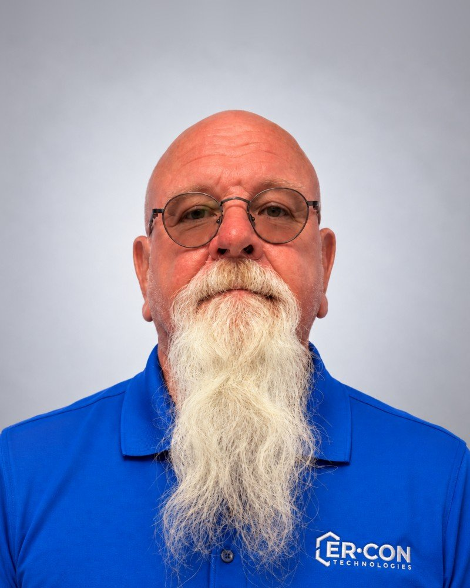
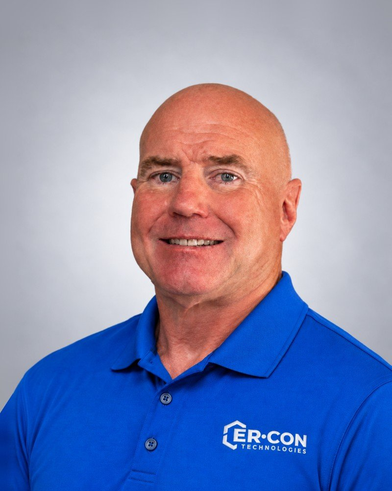
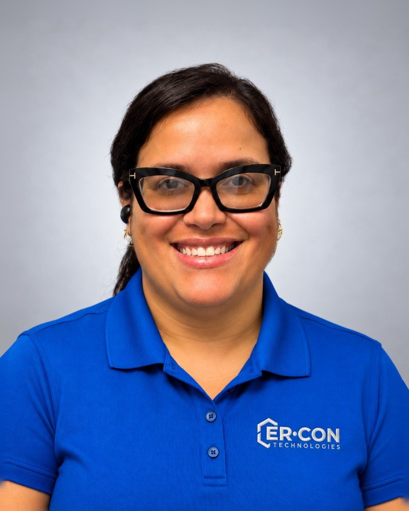
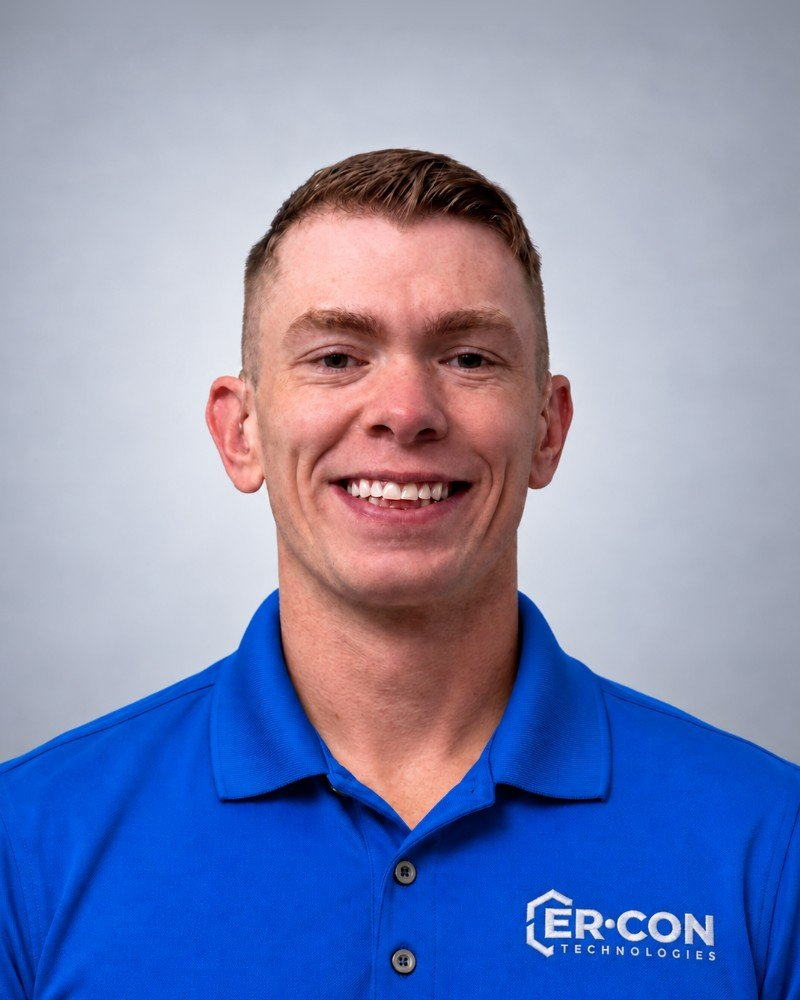
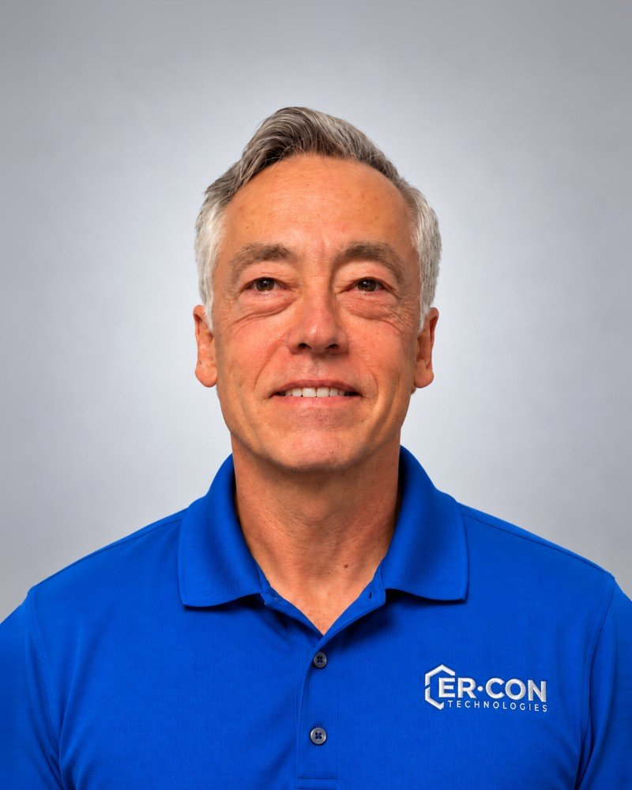
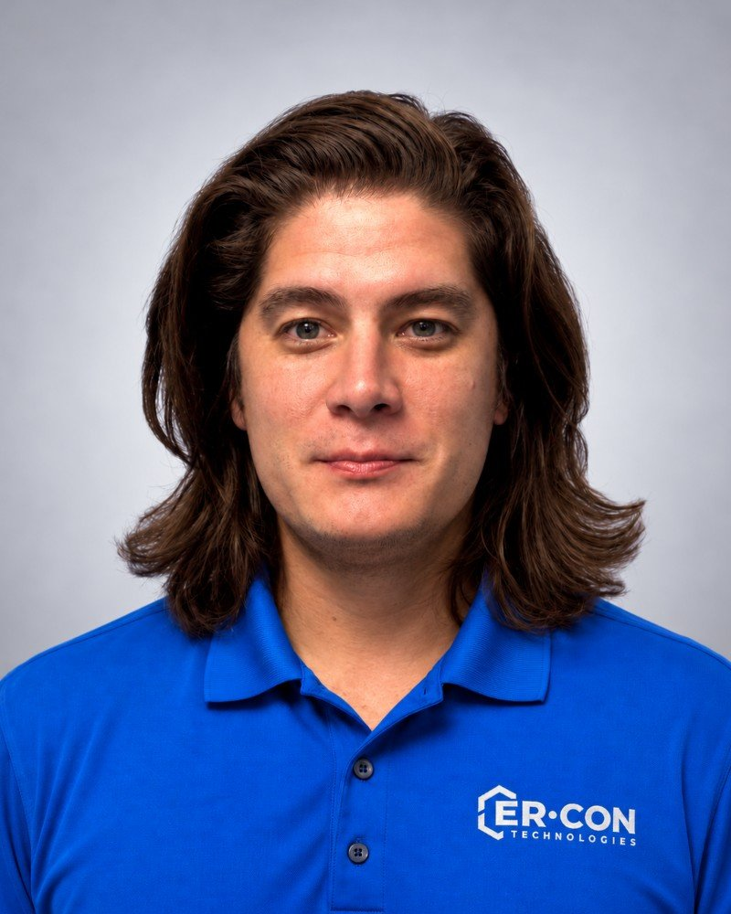
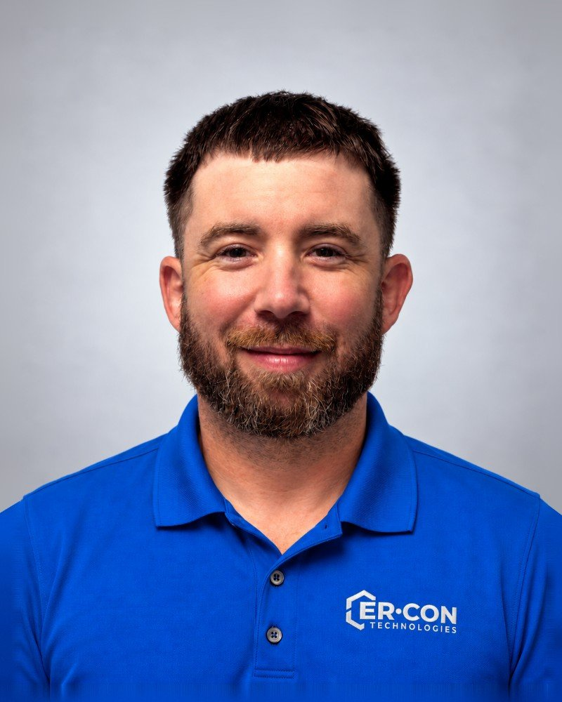
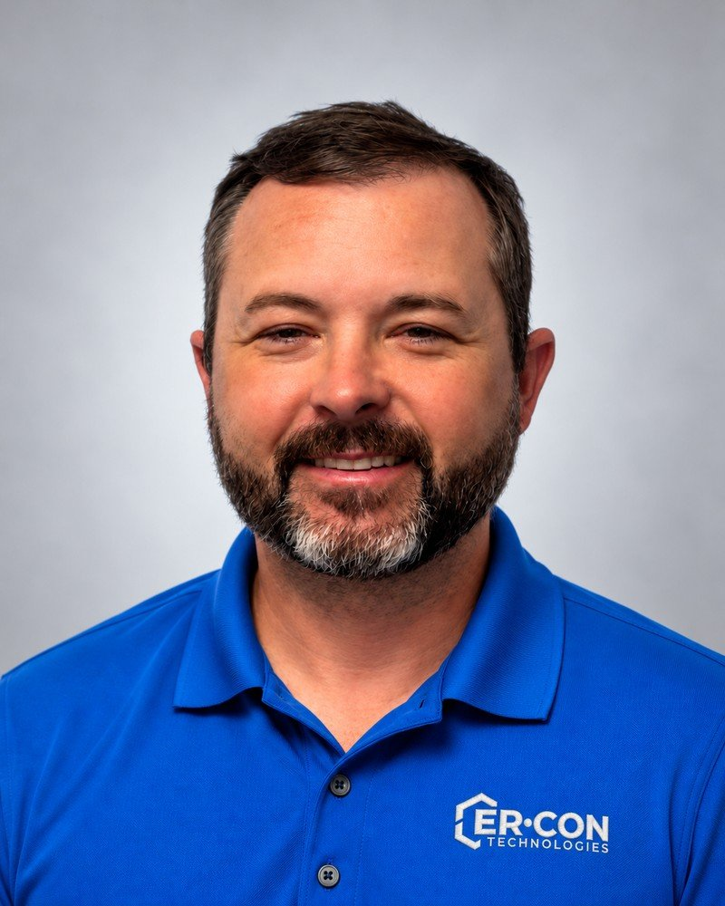

Jim Hodgson
Operations
About Er-Con Technologies
Since 1970, Er-Con has combined engineering, technical judgment and field experience to solve complex erosion problems and protect critical infrastructure.
Our origin story
Our company was built around a specialized kind of problem. For more than 50 years, Er-Con has worked where moving water, unstable ground and critical infrastructure come together. Storms and flooding can destabilize riverbanks, channels, slopes and the areas surrounding pipelines, roads, bridges and adjacent construction. Correcting the visible condition that prompted the call is often the easy part. The real challenge is understanding why it happened and designing a solution that will withstand those same forces in the future. Without that understanding, the next storm or high-water event can wash away the repair and allow the problem to return. We don’t just repair the visible damage. We also address the forces that created it.
Experience has shaped a practical, field-informed way of working: understand what is happening at the site, identify what is driving it, design for the actual conditions and then do the heavy lifting to implement the solution in the field. We take pride in leaving every site better than we found it, knowing our work will continue to protect the site and the assets around it for many years to come. It is an approach refined across more than 3,000 completed projects around the world.
Today, Er-Con brings technical evaluation, engineering, permitting, fabrication and on-site execution together to give clients a clear path from a complex field condition to a durable installed solution.
Er-Con’s team brings together technical judgment, operating discipline and firsthand understanding of field execution.
Together, they preserve the experience and practical judgment that built Er-Con while continuing to move the company and its solutions forward.

Operations

Project Management

Design & Permitting

Technical Services

Project Management

Project Management

Project Management

Business Development
Careers at Er-Con
Explore current opportunities to join Er-Con and help us protect infrastructure, property and natural resources.